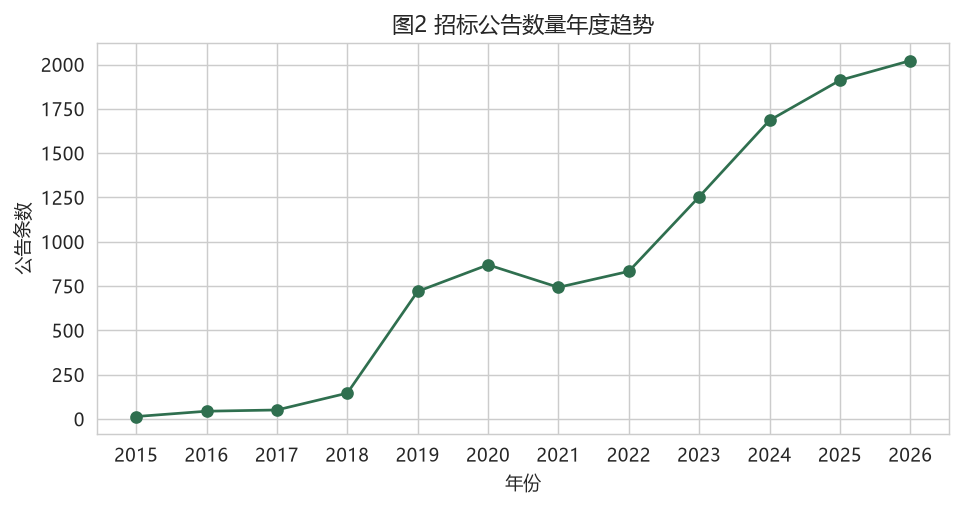
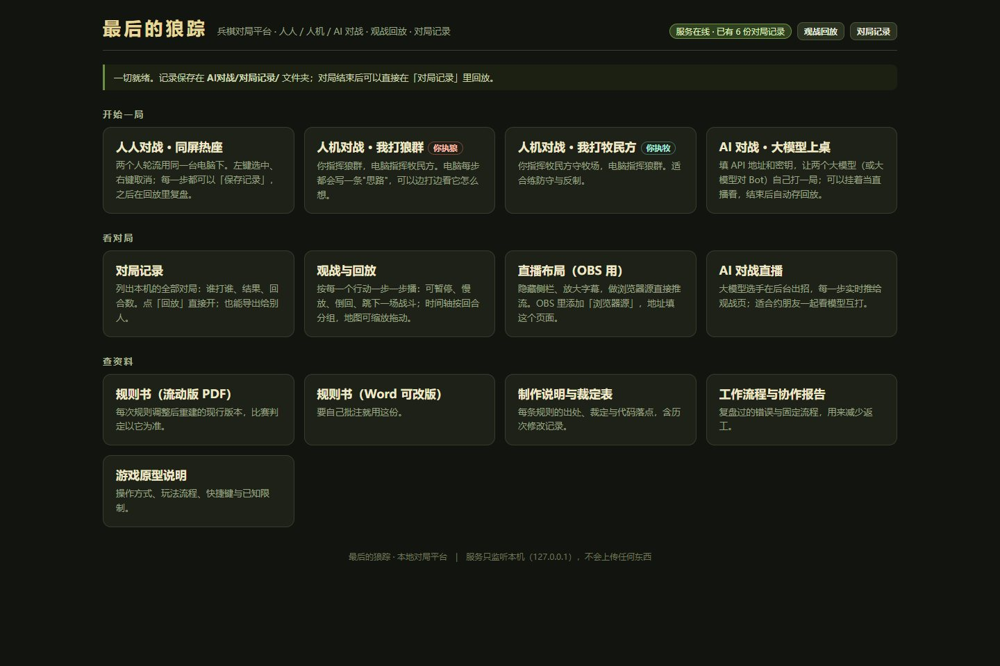

数据医院招标投标数据采集与分析
把散在 27 个医院官网、格式各不相同的招标采购公告，收成一张能横向比较、能建模的数据集，再用五类模型看金额、标的类型与流标风险。
10709 条公告
27 家医院官网
9579 份正文
2830 个附件
数据、兵棋、影像，再加一块竞赛与论文。每张卡都能点进详情：数字来自项目产出，限制也照实写。

数据把散在 27 个医院官网、格式各不相同的招标采购公告，收成一张能横向比较、能建模的数据集，再用五类模型看金额、标的类型与流标风险。

兵棋狼群潜入牧场、猎杀牲畜、带战果撤离；牧民守畜、封堵洞口。把一套纸面规则做成能真跑、能测、能联机的可玩原型。
 影像
影像
图集里有兵棋截图、数据图表与影片截帧；随笔里记着这些项目怎么做出来、在哪里踩过坑。想继续逛，往这两个方向走。